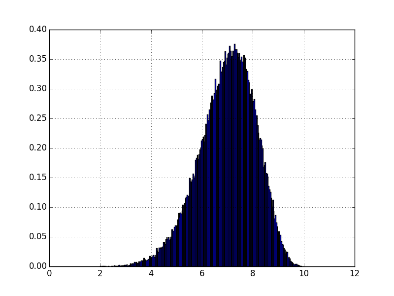
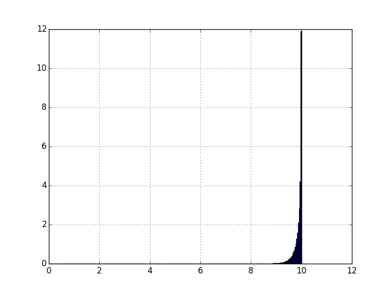

Basic ballistics
Where things are thrown up and fall down.
2016/04/10
One of the first systems a burgeoning physicist tackles is idealized ballistic trajectories. This is where the only force considered to exist for a particle (say a baseball or cannon shell) is a constant force in one direction, in this case down, $&\vec{F}= -mg \hat{y}&$. This makes acceleration quite easy to find, $&\vec{a}= -g \hat{y}&$. Which, after some straightforward integration produces $&\vec{v}= v_{x0}\hat{x} + (v_{y0}-gt )\hat{y}&$ and $&\vec{r}= cos(\theta)v_0t\hat{x} + (sin(\theta)v_0t-\frac{g}{2}t^2) \hat{y}&$ the little carrots over x and y are referred to as hats and they indicate that x and y are unit vectors, specifying what direction the quantity is pointing in. The trig functions come into play because we can break down the initial velocity into it's x and y components based on where it was pointed. Play around with the initial angle and velocity and see how it they impact the path.
So while this is a relatively simple system, there are some questions you could ask about it that are good exercises when a student is starting to learn how to explore a system theoretically. When does the particle hit the ground again? How far does it go? What angle sends it furthest? How do errors in measurement impact these results? Let's poke around and see what we find.
Let's start by answering how long is the object in the air for. We know how long it takes to start falling down again because our description of the velocity. If it's positive, it's going up, if it's negative, it's going down. So if $&v_y(t) = v_{y0}-gt&$ this means that the particle will start falling down after it's velocity goes through 0, or at time $&v_{y0}/g=t_{apex}&$. Now how does that help us find out how long it takes to land? Well because the acceleration is constant, going up more and more slowly is not significantly different than going down faster and faster. This means that by the time our particle is traveling down as fast as it was traveling up it will also be at the same height. So if we found when it was traveling down at $&v_{y0}&$, we'd also know when it was ground level. It'll take just as long to speed back up as it took to slow down, so we know it's time of flight was twice the time to apex, $&t_f = 2t_{apex}=2\frac{v_{y0}}{g}=2sin(\theta)\frac{v_0}{g}&$. We can do two things to increase our confidence that this is the right answer; easiest is to check the units. We wanted an answer in units of time, and both 2 and trig functions are just numbers. But velocity is distance divided by time, and g, or acceleration, is distance over time squared. So dividing velocity by acceleration gets us (distance X time squared) divided by (distance X time), which comes out to units of time, cool. We're not measuring our time of flight in units of elephants, that's reassuring. This is called dimensional analysis and is an easy sanity check one can do anytime during a problem. Admittedly it is no guarantee that things are working, but hey, any port in a storm, right? The other consideration which is considerably stronger, but not always available is we throw it into our solution for position and see if it churns out 0. so $&y(t) = sin(\theta)v_0t-\frac{g}{2}t^2&$, set $&t=t_f&$ and we get $&sin(\theta)v_0t_f-\frac{g}{2}t_f^2= sin(\theta)v_02sin(\theta)\frac{v_0}{g}-\frac{g}{2}(2sin(\theta)\frac{v_0}{g})^2 &$ rearrange things and do some cancellation so it's a bit more obvious what we're looking at to come to $&y_f = 2sin(\theta)^2\frac{v_0^2}{g}-2sin(\theta)^2\frac{v_0^2}{g}=0&$ which is how high off the ground something that's landed should be, so we're pretty sure we found the time of flight for this projectile.
So how far does it go in it's flight? This is sometimes referred to as range. Well, with time of flight, and our first expression for x as a function of time $&x(t)=cos(\theta)v_0t&$ we can just set $&t=t_f&$ again and get $&cos(\theta)v_0t_f= cos(\theta)v_0(2sin(\theta)\frac{v_0}{g})= 2sin(\theta)cos(\theta)\frac{v_0^2}{g} &$ Which is relatively tidy, but if we look up some trig relations, we can simplify it further to get $&x_f=sin(2\theta)\frac{v_0^2}{g}&$. How you'd find that yourself involves actually some really elegant math involving the Euler identity $&e^{ix}=cos(x)+isin(x)&$ and complex numbers. Some of the implications of that could easily be a satisfactory discussion of it's own, so we'll just take the result and keep going.
So now we have a range in terms of our initial velocity and the trajectory it started on. Now, that $&v_0^2&$ term is kind of boring, because it's always positive and always growing, but the $&sin(2\theta)&$ term has some interesting properties. Namely it starts at 0 for $&\theta=0&$ and goes back to 0 at $&\theta=\pi/2&$. If we wanted to figure out what angle produces the furthest range, we would generally take a derivative and find where that equals 0, but this is a fairly simple expression and it's common to just remember that $&sin(x)=1&$ if $&x=\pi/2&$ so if $&2\theta = \pi/2&$ we see that range is maximized at $&\theta = \pi/4&$ where the range will be $&\frac{v_0^2}{g}&$
But what about errors? If you remember from the first article I wrote on error propagation if we have some uncertainty in some input values, how does that crop up in our final value? Well, applying the equation referenced in that article ( $&\sigma_F=\sqrt{\Sigma_1^n(\frac{df}{dx_i}*\sigma_{x_i})^2}&$ ), we have $&\sigma_{x_f} = \sqrt{(\frac{dx_f}{d\theta}\sigma_{\theta})^2+(\frac{dx_f}{dv_0}\sigma_{v_0})^2}&$ which means now we take derivatives. And we're presented with $&\sigma_{x_f} = \sqrt{ (2cos(2\theta)\frac{v_0^2}{g}\sigma_\theta)^2 +(2sin(2\theta)\frac{v_0}{g}\sigma_{v_0})^2 }&$ This is actually rather interesting because the contribution due to error in $&\theta&$ becomes vanishingly small at the optimal angle, as $&cos(\pi/2)=0&$. To see the implications of this I generated histograms of what happend when I introduced $&\sigma_\theta=\pi/40&$ noise when $&\frac{v_0^2}{g}=10&$ and the angle was either $&\pi/8&$, or $&\pi/4&$.
 
The y-scale is the same in both cases, so we can see that the relative expectation between getting the most likely case is over 30 times higher even with the same amount of variability in the initial values.